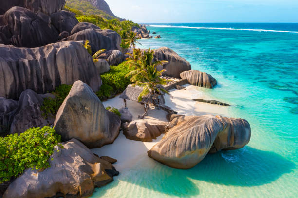

Seychelles

🏝️Seychelles:natura incontaminata e spiagge tra le più belle al mondo. Ideale per chi cerca tranquillità e romanticismo.
🏝️Seychelles:natura incontaminata e spiagge tra le più belle al mondo. Ideale per chi cerca tranquillità e romanticismo.